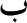

İslam kime ve neye karşı olarak ortaya çıktı?
Çürümüş küfür mabetlerinin üzerine çöken bir kâbus misali, zihinlerde başlayan ve şehrin surlarını kuşatan bir devrimden söz ediyorum...
İslam, zaten var olan bir hakikatti.
Âli İmran Suresi, 67. ayet: İbrahim ne bir Yahudi'ydi ne de bir Hıristiyan. O, sadece Hanif birMüslüman'dı/Allah'a teslim olandı. O müşriklerden değildi.
Mekke sokaklarında, Allah'a inandığını söyleyen, taş ve tahta putları Allah'a yaklaştıran objeler, veliler olarak tanımlayan, namaz kılan, dindar insanlar vardı.
Lakin bunlar, yalnızlığı din edinmişlerdi.
Her yerde yalnız insanlar, güvensizlik ve kaos hâkimdi. Bir tarafta kesesi dolan kodamanlar, öteki tarafta yoksullaşanlar. Ahiret ve kader kavramları üzerinden kandırılmış insanların doldurduğu sokaklarda zulüm ve vahşet resimleri hâkimdi...
Hz. Peygamber'e gelen ilk sure, paradigmanın iflasına yol açmıştı. Paradigma iflas etmiş, her şey tersyüz olmuştu... Peygamber yanında tuttuğu Şair Hassan'a Kalem Suresi'nden ayetler okutuyordu. Evvela Alak, sonra Kalem...
"Oku/ikra, yaratan Rabb'inin ismiyle oku! O ki insanı alaktan yarattı." (Alak Suresi, 1-2. ayetler)
Alak Suresi'nin ilk ayetinde geçen "ikra" vurgusu, "oku" olarak çevrilir. Fakat bu, kitap okuma manasına gelmez. Kitap okumak, kıraat, tilavet gibi kavramlarla karşılanır. İkra, "karae" kökünden gelir. Üç temel manası vardır: "devenin rahminde hayız kanının toplanması, dışarı çıkışı ve dağıtmak."
Evet, bir oku manası vardır. Lakin bu okuma, yukarıdaki üç fiili yapmak suretiyle gerçekleşebilecek bir okuma türüdür.
Hemen sonraki ayette geçen, "O insanı alakadan, ilgiden yarattı..." ibaresi, bu okumanın amacına işaret eder. İlk ayet (cümle) neden, ikinci ayet (cümle) sonuçtur.
O halde, evrensel kozmolojik bilginin toplanması, kâinatın sistemini idrak etme, kendini okuma ve kâinata-tabiata uyumlanma evresinde kişi "kap vazifesi görür."
Arapçadaki "B" () harfiyle temsil edilen bu kap, toplama aşamasıdır. Kabın iç yüzü dolar. Kabın altında ise "nokta" vardır.
"Kuran'ın sırrı Fatiha'da, Fatiha'nın sırrı besmelede, besmelenin sırrı B harfinde ve ben o B'nin altındaki noktayım." (Hz. Ali)
Kaptan taşanlar aşağı, noktaya akar. Nokta'da yok olur. Ve gerçek hasıl olur. Neticesinde de, kişi, dağıtmaya başlar. Ancak bu dağıtma, kendi benliğinden değildir. Zaten kamusal olan, "biz" benliğindendir...
Alaka gereği insan, diğerkâm biçimde yaratılmıştır. Esas olan, haklar değil, vazifelerdir. Yeryüzünün halifesi olarak tanımlanan insan, bu söz gereği; Allah'ın yaptığı işi yapmakla görevlenmiş bir kurumu temsil eder.
Allah, yeryüzünün tek mülk sahibi ve bir bakterinin dahi selametini tayin etmiş tek ilahken, insanın yeryüzünün efendisi olma iddiası, çürüktür. Aksine insan, kâinatın efendisi değil, bir parçasıdır.
İşte bu kolektif bilinç için alak kavramı kullanılır. Siz, kolektifleşme, paylaşma, eşitlik üzerine yaratıldınız. O halde bu sınıflar, ayrımlar, çelişkiler neden?
Varlık âleminde her şey noktadan ibaret kılınmıştır. Atom altı düzeyde eşya; birbirinin aynısı olan tek bir şeyden ibarettir. Bu teklik âleminde (vahdet) ego yoktur. Doğal tutum vardır. Genel tavır söz konusudur...
Lakin insan, doğumu itibariyle yine Alak Suresi'nin devamında bahsedilen bir hastalığa yakalanır...
"Hayır! Sakın öyle düşünme, insan muhakkak azar, servet ve malı kendisini diğerlerine ihtiyaç duymaz hissettirdiğinde."
İlk ayetlerdeki "alak", bu ayette geçen "istiğna"yla zıtlanır. Ortaya iki ayrı tipoloji çıkar...
Alak, yani iç içe geçme, ilgi, birliktelik, bir arada yaşam için "tevhit", istiğna; yani ayrışma, üstünlük, sınıflaşma, zümreleşme için de "şirk" denir.
Ve en tehlikelisi ise, şirkin sürekli olarak tevhit elbisesi giymesi durumudur. Şirk, kendisini tevhit elbisesi giyerek aklar.
Bu şirk "Kalem Suresi"nde daha belirgin bir hal alır...
Kaleme ve yazdıklarına ant olsun! (Kalem ve kalemin yazması bir gerçeklik olduğundan, bu "gerçeğe yemin olsun" manasına gelir.)
Sen, efendin sayesinde; ajan ya da dış güçlerin adamı değilsin! (Cinlenmiş değilsin/bkz. "Cinlenenlere" adlı makalem: www.eren-erdem.com.tr)
Ve senin bu mücadelenin neticesinde, büyük bir karşılık var! Çünkü sen çok büyük bir ahlak üzerindesin. Yakında görürsün; ve onlar da görecek...
Hanginizmiş "fitnebaz ve ajan."
Şunda hiçbir şüphe yok ki, Allah; kendi yolundan sapanı ve o yolu sürdüreni çok iyi bilir. O halde, sana sapkın diyenleri asla kafana takma!
Onlar senin onlara yağcılık yapmanı, böylece onların da sana yağcılık yapmasını ve aranızda bu tarz bir çıkar ilişkisinin sürmesini istiyorlar!
Ve özellikle şu adamlara dikkat et:
Çok yemin eden, aşağılık, işi gücü kovuculuk, laf taşımak, iyilik yapmayı engelleyen, agresif, kötülükle dolu, göbeği şişik, kaba ve kötülükle damgalı.
Böyle davranmasının nedeni; zenginliği, malı mülkü ve oğullarının varlığıdır.
Ona yeryüzündeki doğayı, tabiatı, yani delillerimizi gösterirsin. Onlar da sana, "Bunlar artık eskilerde kaldı, biz çağa uymalıyız," der.
Ama yakında burnu sürtülecek!
Tıpkı o bahçe sahiplerine yaptığımız gibi. Onlar, sabah bahçeye gidip çalışacak, emek harcayacaklardı;
Bu konuda istisnasızlardı. Yani asla aksatmazlardı.
Fakat onlar uyurken, bahçelerini büyük bir bela sardı. Bahçe simsiyah kesildi.
Sabah kalkıp birbirlerine seslendiler, "Hadi, çalışmak için erkenden bahçelere gidin..." diye. Derken yürüdüler, aralarında şöyle konuşuyorlardı:
"Aman bugün erkenden gidelim de, bir yoksul bahçeye gelip aramıza girmesin."
İşi gücü alıkoymak ve şiddete başvurmak olan bu adamlar bahçeye vardılar. Gördükleri manzara karşısında şaşırıp, "Biz yanlış geldik galiba..." dediler.
Yok yok! Biz büyük bir zarara uğramışız, demeye başladılar.
İçlerinden makul olanı, "Ben size efendinizi hatırlayın, bu yolla efendilik taslamayın, yani efendiniz Allah'ın kullarının bahçenize gelip mahsul almasına mâni olmayın," demedim mi, dedi.
"Evet halkısın, efendimize uyarız ki biz gerçekten zulmetmişiz," dediler.
Sonra birbirlerine döndüler ve birbirlerini suçlamaya başladılar. Dediler ki:
"Yazıklar olsun bize, biz gerçekten zenginlikle şımarmışız."
Umarız ki Allah bize daha hayırlısını verir, O'na yöneliriz, O'ndan umarız...
İşte bizim bahsettiğimiz azap böyledir. Ahiret azabı büyüktür. Keşke bunu hesap edebilselerdi.
(Not: Bahçe sahipleri bölümünde bahsedilen azap, kendi elleriyle yaptıkları bir azaptır. Yani; onlar, paylaşan, bölüşen bir halkı, mülkiyetçi bir halka dönüştürmüş, bu dönüşüm kendilerine de zarar vermiştir. Çünkü, sadece kendilerini değil, tüm insanları aynı çizgiye sokan bu adamlar, yine kendi yapıp ettiklerinden dolayı zarar görmüşlerdir. İşte Kuran bunu "bizim azabımız" diye tanımlar, çünkü; doğada karşılığı olan bir durumdur. Yani, bunu kim yaparsa, doğanın kanunları gereği başına bu iş gelir, manasındadır.)
Fakat! Allah'a karşı gelmeyen; yani gereğini yapan (bölüşen-paylaşan/bu anlama gelmesinin nedeni, bu ayetin bölüşmeyenlerle ilgili bir bölümden sonra gelmesidir. Yani bahçe sahipleri Allah'a karşı gelmiş, yani bölüşmemiştir. Dolayısıyla Allah'a karşı gelmemek: bölüşmek) kişiler için, Rab'leri/efendileri nezdinde bol nimetlerle doldurulmuş cennetler vardır.
Hiç, barışseverleri; savaş sever suçlularla bir tutar mıyız?
Sizin neyiniz var? Nasıl böyle hükümler üretiyorsunuz?
Yoksa size özel bir kitabınız var da ondan mı okuyorsunuz?
O kitapta, "Beğendiğiniz her şey sizin malınızdır..." diye bir şey mi yazıyor?
Yoksa size karşı, uyanış gününe kadar sürecek taahhüt ya da anlaşmalar mı var?
Sor onlara: Bu tip bir şeye hangisi kefil?
Yoksa, onlara yardım eden "aracı" tanrıları mı var? Hadi doğrucu kimselerse çağırsınlar onları da görelim!
Gerçeklerin meydana çıkacağı gün, onu da yapamayacaklar.
Gözleri yere bakan, egoları çatlamış vaziyette duracaklar! Halbuki sağlamken iyilik yapmaya, iyiliğe yönelmeye davet edilmişlerdi...
O halde bu yalancıları bana bırak! Onları bilmedikleri yönden adım adım azaba yaklaştıracağız.
Onlara mühlet veriyorum, benim tuzaklarımı hiç kimse bozamaz!
Yoksa sen onlardan yüksek bir ücret istedin de ondan mı böyle borç altında kalmamak için kaçıyorlar?
Yoksa, yarın başlarına ne geleceğini biliyorlar mı? Bu kadar emin davranmalarının nedeni ne?
Allah'ın hükmünün gerçekleşmesi için kararlı ol! Balık sahibi gibi olma...
Eğer ona Rabb'inden bir nimet ulaşmasaydı, inan büyük bir sıkıntıya girecekti.
Fakat Allah onu seçti ve iyilerden kıldı.
O gerçeklerin üzerini örten yalancılar, sen onlara Kuran'ın önerilerini anlattığında, gözleriyle seni devirecek gibi bakıyorlardı. Ve, "Bu kesin ajandır," dediler.
Halbuki o anlattıkların bütün jenerasyonlar için geçerli bir öğüt, tavsiyedir. (Kalem Suresi–sonu)
İşte Mekke'deki "şirk" böyle bir şirkti. "Huda size, hurma bize..." parolası üzerine inşa edilmiş bir afyon din üzerinden aldatılan kitleler vardı sokaklarda...
Medine'de inşa edilen kültür, şu temel ilkeler etrafında gelişiyordu:
Leyl Suresi:
Rahman ve Rahim Allah adına...
1-4: Bürüyüp örttüğü zaman geceye, parıldadığı zaman gündüze ve erkeği, dişiyi yaratan şeye ant olsun ki, sizin emek ve gayretiniz kesinlikle iç içe geçmiştir.
5-7: Bu nedenle kim malını verir, bunu yaparak takvalı davranmış olur ve bunu yaparak en güzeli doğrularsa, biz ona, o en kolay olan için kolaylık sağlayacağız.
8-11: Kim de cimrilik ederse ve kendisini tüm ihtiyaçların üstünde görürse ve bunu yaparak en güzeli yalanlarsa, biz ona en zor olan için kolaylık vereceğiz. Aşağı yuvarlanıp helak olduğunda malı onu kurtaramayacaktır.
12: Doğruya ve güzele hidayet etmek sadece bizim üzerimizedir.
13: Sonrası da öncesi de sadece bizimdir.
14-16: İşte bu nedenle, mal vermeyerek yalanlayan, yüz çeviren, karanlık ruhlu azgınlardan başkasının girmediği, alevlendikçe alevlenen bir ateşe karşı ben sizi uyardım.
17-21: Kimseden karşılık beklemeden, sadece yüce Rabb'inin rızasını umarak, arınmak için malını veren çok takvalı kişi ondan uzak tutulacaktır. Ve yakında o mutlaka hoşnut olacaktır.
Evet, emek iç içe geçmişti. Bu bugün de böyledir. Mekkeli kodamanları yıkan sözler bunlardı. Bugün de geçerli olan bu sözler şu manaya gelir:
Üretim, yani oluşan değerin oluşum süreci kapsamlı bir müdahale altındadır. Mesela, bu kitabın ticari bir ürün olduğunu varsayalım...
Bu kitabı yazarken oturduğum koltuğu üreten; o koltuğu vitrine çıkaran; koltuğu nakleden aracın şoförü; yararlandığım kitapları basan matbaada çalışan işçi; başım ağrıdığında içtiğim ilacı getiren validem; o ilacı üreten kişiler, paketleyenler, nakledenler... vs.
İçinden çıkılmaz biçimde emekler iç içe geçmiştir. O halde üretim "kimseye ait değildir." Kamunundur. Ortaktır. Çünkü bu emek, ölçülemez. O halde kim arınmak için malını, "ihtiyaçtan artanı" verirse, kurtuluşa erecektir.
Ve Selman'ın fikir dünyasını temsil eden yukarıdaki görüşler çerçevesinde Hz. Peygamber, yeni bir pratik inşa etmeliydi. Şirkin benliklere işlemişliğini kırabilmek için, "Medine Musahiplik Ahdi"ne gidildi.
Bu ahde/sözleşmeye göre, Müslümanların tümü kardeşti. Ancak içlerinden bazıları, bazılarıyla eşleştirilecek, bunlar; birbirlerinden mesul kılınacaktı...
Hatta, birinin hatasından diğeri hesaba çekilecek, biri açken öteki tok yatamayacaktı. Doğuştan itibaren koşullandıkları bireyci paradigma, ancak bu ve benzeri şekillerde kırılabilirdi...
Bireyci, kişiselci bir paradigma egemendi. Bunu yok etmek için önce aile, sonra kardeşlik tesis edildi. Çünkü aile, toplumun en küçük prototipiydi. Aile kurulduğunda, olmayan toplumu inşa etmek mümkün olacaktı. Kardeşlik de bunun gibi ele alınabilir.
Henüz Ebuzer, Medine'de değildi. Ve biz şunu biliyoruz ki, eğer Ebuzer Medine'de olsaydı, Selman'ın musahibi, yani kardeşi olacaktı...
Hz. Peygamber Selman'a birini kardeş seçmesini önermişti.[35]
Mekke'de işkenceler, sorgulamalar, "mal mülk düşmanı kâfirler(!)"[36] aleyhinde kara propaganda yapılırken, Hz. Peygamber'in kardeşlik sözleşmesiyle uğraşıyor olması, yeni bir algı inşa etmenin önceliğini gözler önüne sermektedir.
Selman, İran'dan gelmiş olması hasebiyle, bir türlü yok edilemeyen kavmiyetçi kültürün içinde yabancılaşmıştı.
Müslümanlar, Peygamber'e inanmışlardı. Ama henüz İslam'ı tam manasıyla tanımıyorlardı. Onları bir arada tutan şey, gerçekler ve Hz. Muhammed'in entelektüel kişiliğiydi.
Fakat hemen hemen tamamı, geçmişlerine ait olan yoz kavram ve kültürel nüvelerini de beraberinde getirmişti. Arap diyarında "yabancı" olmak, dışlanmak demekti.
Arap ve Arap olmayan gibi bir etnik tanımlama üzerinden hareket edenlerin coğrafyasında Selman, kendisine ırkı, ailesi sorulduğunda, "Ben Selman İbn ül-İslam," diyordu...
Yani İslam'ın/barışın çocuğu Selman...
Artık bir köle değildi, tüm tutarlılığıyla Hz. Muhammed'in eylemlerine olan bağlılığı hasebiyle ve yetişme tarzında var olan usta-çırak ilişkisinin içselleşmesinden ötürü kendisini davaya tamamen adamıştı.
Talimatı yerine getirdi. Ebu Derda'yı kardeşi olarak atadı...
Henüz tercümanlar aracılığıyla konuşabildiği Hz. Muhammed'in bu sözüne binaen kardeş edindiği Ebu Derda'yla kuracağı ilişkiyi çok önemsiyordu. Çünkü, bu ilişki biçiminin bir hikmeti olmalıydı. Bu kardeşlik, yeni bir yaşam kültürü inşa edecekti.
Sık sık Ebu Derda'nın evine gidiyordu. Yine bir gün Ebu Derda'nın evine gelen Selman, hanımından kardeşini sormuştur. Kendisine uyuduğu söylenince, bu saatte niçin uyuduğunu, hasta olup olmadığını öğrenmek istemiştir. Hanımından, "Cuma günleri uyumaz, gecenin sabahına da oruçlu olarak girer. Bu nedenle şimdi ihtiyacı olan uykusunu uyuyor," yanıtını almıştır.
Selman, Ebu Derda'nın bu tavrını doğru bulmayarak hemen yemek hazırlamaya koyulmuştur. Yaptığı yemeği, Ebu Derda'nın odasına götürmüştür. Ebu Derda uyanmış, yemeği oruçlu olduğu için yiyemeyeceğini belirtmiştir. Selman, Ebu Derda yemedikçe kendisinin de yemeyeceğini bildirerek, orucu bozmasını istemiştir.
Selman'ın bu isteği, Ebu Derda'yı endişeye sevk etmiştir. Birlikte Resulullah'a gitmişler ve durumu ona anlatmışlar; onları dinleyen Resulullah, Ebu Derda'ya, "Selman, senden daha bilgilidir..."[37] diye üç kere tekrarlamıştır...
Selman züht hayatını iyi biliyordu. Dindar rahipler elinde yetişmişti. Dinde "ğulül", yani aşırıya gitme, ritüele boğulma, dini salt ritüelden ibaret kılma eğilimine karşı durması hasebiyle, bu eylemde Hz. Peygamber'den onay almıştır.
Lakin burada önemli olan, henüz Kuran'dan bir şey okumamış olan Selman'ın bu tepkisinin onay alışıdır. İslam dininin öncü iki sahabesi Ebuzer ve Selman, Kuran'la tanışmaksızın "İslam" onayı alan ilk iki kişidir.
Selman kardeşlik sözleşmesini çok önemsiyordu. Bu işi layıkıyla yapmalıydı. Ebu Derda'yla ayrı düştüklerinde mektuplaşırlardı. Lakin Ebu Derda, Selman gibi bir kardeşi olması hasebiyle çok önemli mesafeler kat etmişti. Selman'ın bu ilk sınavdaki başarılı tutumu, Hz. Peygamber'in onunla özel bir bağ kurmasını sağlamıştır. Selman, Peygamber'e "halilim/dostum" diye hitap ederken, Hz. Peygamber artık gecelerinin çoğunu Selman'la özel sohbet ederek geçirmektedir. İki sevgili de artık bir noktada buluşmuştur. Bir tarafta Hz. Peygamber'in kelimelerini net biçimde anlayan Selman, öte tarafta hakikati anlatmaya aç bir elçi...
Selman'ın Arap olmayışı, sert kabileci köklerden gelmeyişi ve ritüelistik bir dindarlık kökeninden kopmuş olması, hayatın, sokağın içinden bir söz arıyor olması; Hz. Peygamber'in rahatlamasını sağlıyordu. İçini döktükçe, eşi Ayşe dahi kıskanıyor, insanlar Selman'a hürmetini artırıyordu...
O günlerde Hz. Muhammed Ayşe'yle evlenmişti. Ve Ayşe, "Bana dahi uğramaz, Selman'la muhabbet eder," derken, küçük bir sitemle yaklaşıyordu hadiseye...